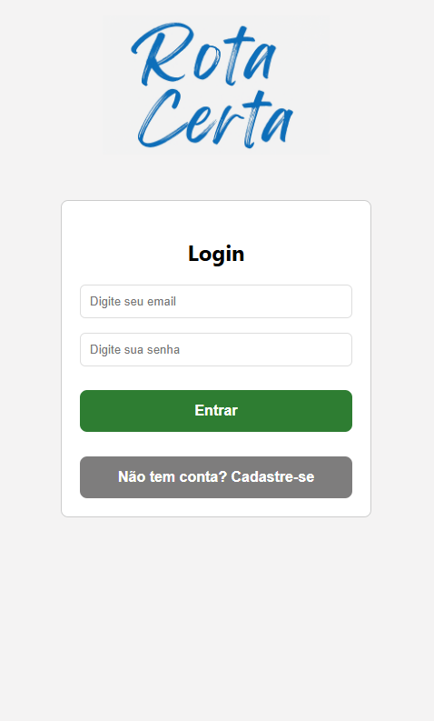
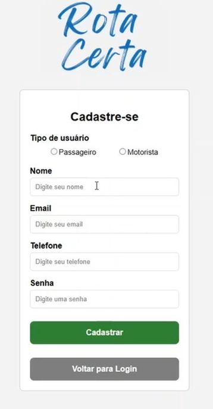
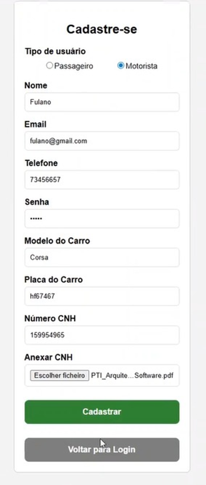
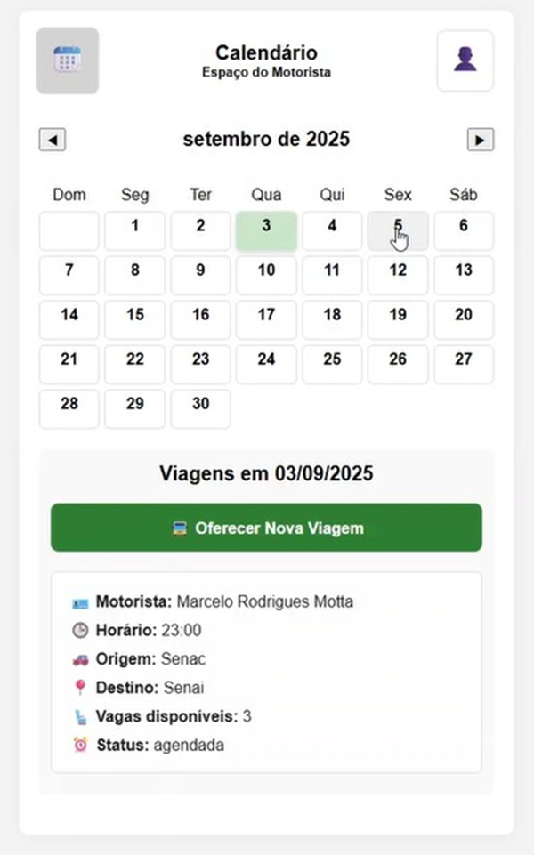
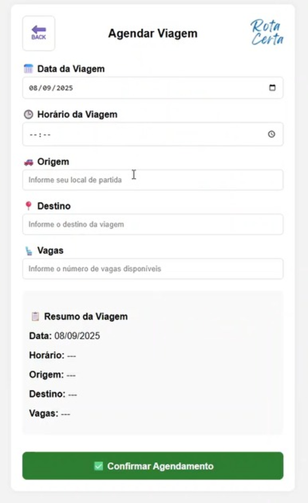
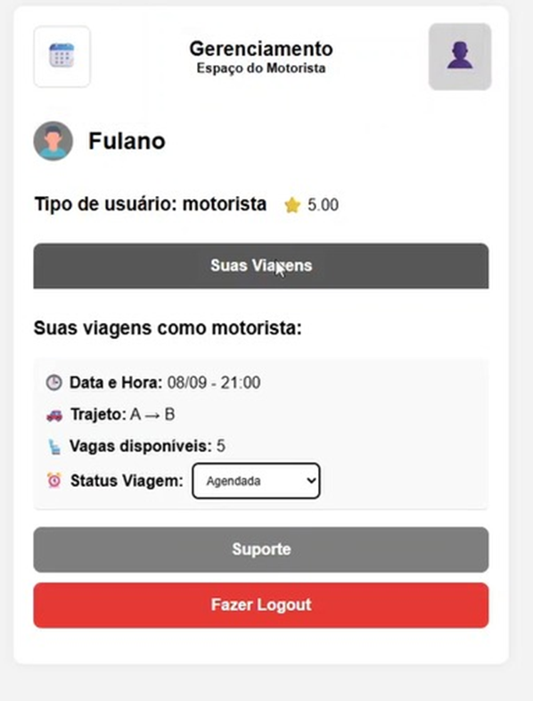
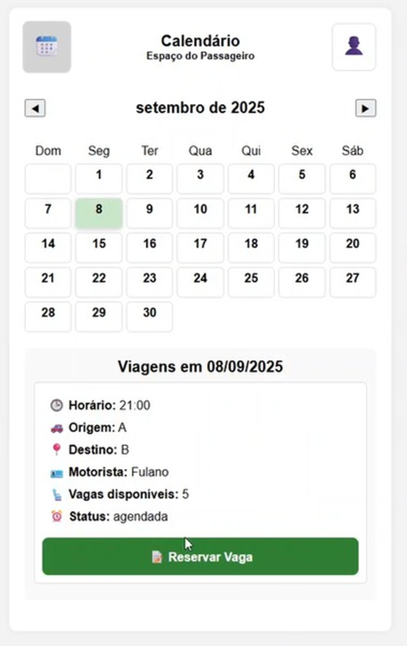
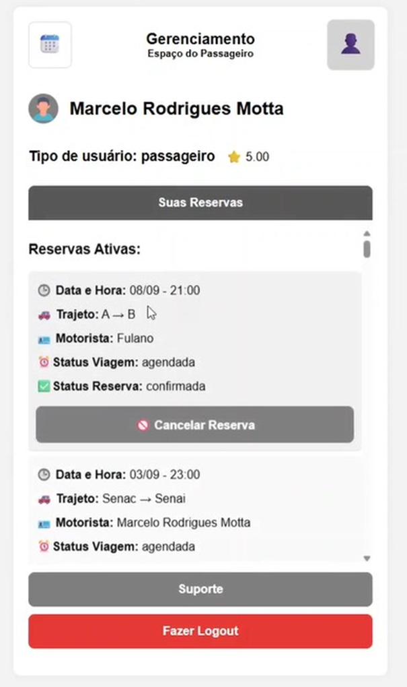

Sistema desenvolvido para otimização e gerenciamento de rotas
O Rota Certa, um aplicativo desenvolvido para aprimorar a mobilidade em cidades remotas, onde soluções tradicionais de transporte, como conhecidos serviços de aplicativo e transporte público, são limitadas ou inexistentes. A proposta surge da necessidade crescente de alternativas ágeis, acessíveis e confiáveis em regiões frequentemente negligenciadas pelo desenvolvimento urbano. O aplicativo Rota Certa adapta conceitos já consolidados em plataformas de mobilidade para oferecer um sistema de reserva de viagens e acompanhamento de horários, permitindo que usuários planejem seus deslocamentos de forma mais segura e eficiente.







